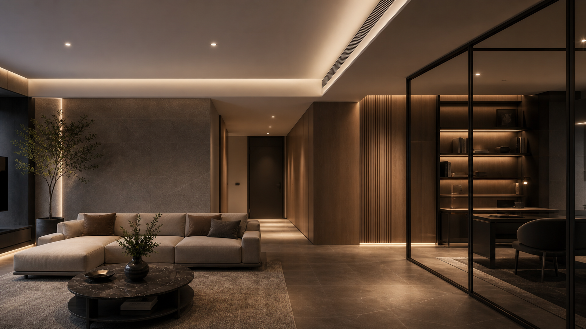

01
Wykonawstwo instalacji
Wentylacja, klimatyzacja, instalacje grzewcze, chłodnicze i wodno-kanalizacyjne. Zakres realizowany z dbałością o koordynację, dostęp serwisowy i etap odbioru.
Poznaj zakres wykonawstwaMI-PRO / HVAC i instalacje sanitarne
Realizacja, koordynacja i techniczne wsparcie instalacji — od analizy dokumentacji po uruchomienie i odbiór.
Zakres usług
Wentylacja, klimatyzacja, instalacje grzewcze, chłodnicze i wodno-kanalizacyjne. Zakres realizowany z dbałością o koordynację, dostęp serwisowy i etap odbioru.
Poznaj zakres wykonawstwa
Systemy dla domów, apartamentów, biur i lokali — dobierane z uwzględnieniem komfortu, akustyki, estetyki i późniejszego serwisu.
Klimatyzacja w KielcachAnaliza dokumentacji, opinie techniczne, nadzory, odbiory i optymalizacja rozwiązań. Dokument ma prowadzić do jednoznacznych decyzji, nie do kolejnych wątpliwości.
Poznaj wsparcie techniczneStandard MI-PRO
Decyzje techniczne powinny uwzględniać nie tylko projekt, ale również wykonanie, serwis i późniejsze użytkowanie.
Zakres, odpowiedzialność i sposób działania ustalamy przed rozpoczęciem współpracy.
Oceniamy rozwiązania pod kątem technicznym, montażowym i eksploatacyjnym.
Zwracamy uwagę na przebieg instalacji, dostęp serwisowy, uruchomienie i dokumentację.
O MI-PRO
MI-PRO prowadzi Łukasz Miszczyk, specjalista z ponad 15-letnim doświadczeniem w realizacji, koordynacji i technicznej ocenie instalacji HVAC oraz sanitarnych. Praktyczne spojrzenie na cały proces pozwala łączyć wymagania projektu, możliwości wykonawcze i oczekiwany efekt techniczny.
Wsparcie techniczne
Opinie, analizy i nadzory mają prowadzić do jednoznacznych wniosków oraz możliwych do wdrożenia działań. Dokument nie jest celem samym w sobie — ma pomóc podjąć właściwą decyzję.
Kontakt
Prześlij podstawowe informacje o instalacji, inwestycji albo problemie technicznym. Wrócimy z informacją o możliwym zakresie współpracy.